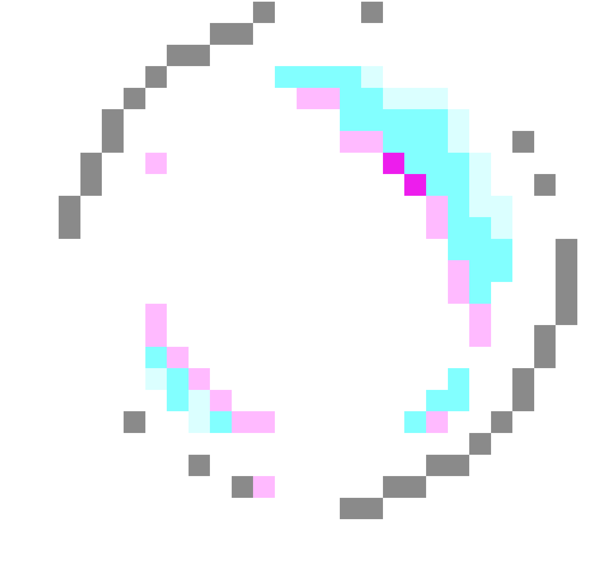

first lets choose your fighter
DATEN SIND DAS NEUE ÖL
Was hat der Kapitalismus mit Cookies bzw. Daten zu tun? Kurz gesagt, ist der Kapitalismus das Wirtschaftssystem, das auf privatem Besitz der Produktionsmittel und deren Betrieb für Profit beruht. Ebenso gibt es in der Gesellschaft einen hohen Wettbewerb auf dem Markt, zusammen mit einer großen sozialen Ungleichheit, die auf Gewinn oder Vermögen basiert. Nach dem dies geklärt ist, wenden wir uns dem Begriff „Cookies“ zu. Cookies sind kleine Dateien, die von Websites auf Ihrem PC abgelegt werden, um Informationen über Ihre bevorzugten Einstellungen zu speichern. Cookies können das Browsen angenehmer gestalten, da Websites Ihre bevorzugten Einstellungen speichern können oder Sie sich nicht jedes Mal neu anmelden müssen, wenn Sie bestimmte Websites besuchen. Manche Cookies gefährden jedoch unter Umständen Ihre Privatsphäre, indem sie die von Ihnen besuchten Websites nachverfolgen. Was haben diese beide miteinander zu tun? Folgendes: Oft hört man das Zitat “Data is the new oil”, auf Deutsch “Daten sind das neue Öl” im Zusammenhang von Big Data, Machine Learning und dem Technologie-Hype rund um Data Science. Die dominierenden Firmen im Digitalmarkt wie Google, Facebook, Amazon, Apple und Microsoft haben eine Vorherrschaft, bei der viele unter anderen wegen der starken Wettbewerbskonkurrenz viele Unternehmen zerbrochen sind. Das interessante an der Metapher ist, dass das Schema des Prozesses des Ölgewinnungs ähnlich wie der Prozess der Datennutzung ist. Auch Daten müssen, wie Öl vom Unternehmen lokalisiert, erschlossen und gefördert werden, bevor sie weiterverarbeitet werden können. Auch der Begriff der “Pipeline” kommt im Feld des Data Engineerings, also dem Übermitteln, Konsolidieren und Speichern von Daten oft vor. Dass Daten ebenso wie Öl dann erst verfeinert, verarbeitet werden müssen deckt sich mit dem heutigen Bild einer Data Driven Company. Zu guter Letzt deckt das Bild auch den Einsatzzweck ein: Ohne Öl hätte es keine industrielle Revolution gegeben, da sie alle Maschinen am Laufen hielt. Ähnlich der Einsatz von Daten: Inzwischen gibt es hunderte von Anwendungsbeispielen, wie Daten eingesetzt werden können.
WELCHE DATENTYPEN GIBT ES?
Das Wachstum im Bereich der Technologie, insbesondere bei Smartphones, hat dazu geführt, dass auch Text-, Video- und Audiodaten sowie Web- und Protokollaktivitätsaufzeichnungen zu den Daten gehören. Die meisten dieser Daten sind unstrukturiert. Der Begriff Big Data wird in der Datendefinition verwendet, um Daten zu beschreiben, die im Petabyte-Bereich oder darüber liegen. Big Data wird auch mit den 5 Vs beschrieben: Vielfalt, Volumen, Wert, Wahrhaftigkeit und Schnelligkeit. Heutzutage hat sich der webbasierte E-Commerce stark verbreitet, und es haben sich Geschäftsmodelle entwickelt, die auf Big Data basieren und die Daten selbst als einen Vermögenswert behandeln. Und Big Data bringt viele Vorteile mit sich, wie z. B. Kostensenkungen, Effizienzsteigerungen, Umsatzsteigerungen usw. Die Bedeutung von Daten geht über die Verarbeitung von Daten in Datenverarbeitungsanwendungen hinaus. Wenn es darum geht, was Datenwissenschaft ist, wird ein aus Fakten bestehender Körper als Datenwissenschaft bezeichnet. Dementsprechend haben auch die Bereiche Finanzen, Demografie, Gesundheit und Marketing unterschiedliche Bedeutungen von Daten, die letztlich unterschiedliche Antworten darauf geben, was Daten sind.
WAS IST EIN KEIN MERKMAL VON BIG DATA?
DATENMENGE (VOLUME)
Anzahl von Datensätzen & Files
Yottabytes, Zettabytes
Exabytes, Petabytes
Terabytes
ANALYTICS
Erkennen von Zusammenhängen
Bedeutungen, Mustern, Vorhersagemodelle,
Data-Mining, Text-Mining
Bildanalyse, Visualisierung
INFORMATIONSQUALITÄT
Bingo!
GESCHWINDIGKEIT (VELOCITY)
Datengenerierung in hoher Geschwindigkeit
Übertragung der konstant erzeugten Daten
Echtzeit (Millisekunden, Sekunden, Minuten,
Stunden)
DATENVIELFALT(VARIETY)
Fremddaten (Web etc.)
Firmendaten
strukturierte, semi- und unstrukturierte Daten
Texte, Video, Tweets, Bilder, Blogs...
Kommunikation zwischen Machinen
MICROTARGETING

Microtargeting ist nicht einfach zu definieren, da es recht vielseitig ist, allerding werden verschiedene datenbasierte Marketingstrategien, welche durch Data-Mining und Cluster-Analyse identifizierte, Zielgruppen mit passgenauen Werbe- und Image-Botschaften angesprochen. Das Verfahren ist bereits lange in Verwendung, jedoch hatte es sich in Laufe der Zeit weiterentwickelt. Heutzutage können neue, bessere Technologien mehr Daten erheben, wodurch dies auch durch das Internet den vollen Umgang ausschöpft. Das Verfahren nutzt mit einer entsprechenden Kommunikation Einfluss auf das Verhalten und die Einstellung gegenüber den eigenen Produkten und Dienstleistungen dieser identifizierten Gruppen zu nehmen. Nehmen wir ein spezifisches Beispiel „die Wahlen“. Das Online-Targeting ermöglicht den Parteien ganz spezifischen Wählerinnen und Wähler mit maßgeschneiderten Botschaften beispielsweise auf Facebook anzusprechen. Dabei handelt es sich um Überwachungswerbung. Denn Plattformen wie Facebook spielt die Internetnutzenden aus und passende Wahlkampfwerbung auszuspielen. Das ist dann im Grunde, als ob Parteien jeden Tag aufs Neue ein Plakat vor meiner Haustür hängt, dessen Inhalt meine Interessen und Ansichten entspricht. Dank Facebook wissen Parteien sehr genau, was wir als potenzielle WählerInnen hören wollen. Dementsprechend locken sie ihre Wählerinnen und Wähler dann mit maßgeschneiderten Werbeanzeigen. Da viele Unternehmen, die nicht gerne politische Werbeanzeigen produzieren wollen, da es viele gesetzlichen Regelung ins Spiel kommen, greifen Parteien beispielsweise auf Facebook. Denn Facebook interessiert sich nicht für Gesetze, Regeln, Wahrheit, Moral und demokratische Werte. Aus den Forschungen heraus, wissen wir, dass das Targeting weitgehend nicht die Wirkmacht hat, um Menschen mit anderen Meinungen zu überreden oder sie in ihren Grund Überzeugungen zu manipulieren. Man geht eher mobilisierenden Wirkung aus, sodass die eigenen Weltanschauungen verstärkt werden kann. Das wesentliche Problem ist, dass die Menschen sich dabei keine Gedanken machen und es nicht mal für wichtig erscheinen. Facebook verkauft seine Nutzer schamlos aus, indem sie Werbetreibende die Daten weiterreichen und User zu targeten. Im Kern des politischen Online-Targeting zutiefst antidemokratisch, weil es auf dem Prinzip des Ausschusses von Personengruppen basiert. Im politischen Raum überlasst du eine macht einer Plattform und weißt nicht, wie diese funktioniert. Das ist für den politischen Bereich demokratiefeindlich und Facebook interessiert sich dafür 0.00 %. Mittlerweile haben sie sich entschieden das Online-Targeting mehr zu automatisieren, wodurch es keine moralischen Filter gibt.
WAS BABYS MIT DER AMBIVALENZ VON ALGORYTHMEN ZU TUN HABEN
DER WAHRE WERT UND DIE WERBUNG
Wir produzieren am laufenden Band. Hier mal ein Like, da mal ein geteiltes Bild oder allein eine Suche im Browser. Die allgegenwertige Präsenz und
gesellschaftliche Etablierung unserer digitalen Geräte im Alltag macht dies so einfach wie nur möglich. Doch die Gesamtheit unserer Aktivität im Web
läuft jederzeit parallel mit einer Akkumulation unserer persönlicher Daten durch verschieden Unternehmen.
Was macht diese so lukrativ?
Daten sind als Produkt zu verstehen, mit dem gehandelt und durch Analyse ein Wert extrahiert wird, so Viktor Meyer-Schönberger. Das Einkommen sowie das Business
-Modell vieler großer Konzerne werden somit stark vom Datenhandel beeinflusst, dessen Relationen oft nicht transparent und nachvollziehbar sind. Wie viel sind unsere
Daten also wert? Nach Jaron Lanier, der als Internet-Theoretiker und Pionier unter anderem Begriffe wie virtual Reality prägte, sei es schwierig einen genauen Wert zu
bestimmen, da auch zukünftige, möglicherweise gewinnbringende, Innovationen auf dergleichen Daten basieren würden. Aus diesem Grund fordert er auch die Bezahlung des Einzelnen
für dessen produzierten Daten. Es ist nicht genau definierbar wie viel im Datentransfer gezahlt wird, dennoch ist anzunehmen, dass die Summe erheblich ist. Dadurch wird die Idee,
den Produzenten, der angetrieben durch „Share!“ und „Like!“ Aufrufe kostenlos und freiwillig seine Daten preisgibt, gerecht zu entlohnen, zu einer fundierten Überlegung mit
nachhaltiger Perspektive für den zukünftigen Datenumgang. Lanier spekuliert, dass für einen durchschnittlichen User ein paar hundert Dollar pro Jahr ausgegeben werden.
Für viele läge der jährliche Betrag sogar in den Tausendern.
Doch wozu nützen unsere Daten überhaupt?
Jeder kennt es. Man besucht eine Webseite und wird urplötzlich mit einem Meer von Werbung und Anzeigen um den eigentlichen Content konfrontiert. Es dürfte kein Wunder sein,
dass unsere persönlichen Daten oftmals verwendet werden, um gezielte Anzeigen zu platzieren. Indikatoren für Kaufabsichten und Interessen lassen sich bei näherer Überlegung
jedoch nicht alleinig durch unsere demografischen Daten bestimmen, sondern sind wie Big Data an sich um einiges tiefer in Verhaltensweisen und Interaktionen verwurzelt, so
jedenfalls Data Scientist Brian Dalessandro. Im Gegensatz zu den quantitativ begrenzten demografischen Anhaltspunkten, seien die bei der Webnutzung hinterlassene Verhaltensspuren
beinahe unerschöpflich. Jede kleinste Aktivität speist somit das Gesamtprofil, das über den User existiert und im Zuzug weiterer Daten individuelle Muster verrät, die weiterverwendet werden.
So sagt allein die Wahl des Restaurants viel über ein mögliches Budget oder Gesundheitsbewusstsein aus. Das Ziel der Werbeindustrie besteht dabei neben der Ermittlung von Produkten,
für die der User eventuell Interesse haben könnte, darin zu bestimmen ob diese ,,In-Market“ sind, also ob zum jetzigen Zeitpunkt Interesse herrscht oder man unterbewusst einen Kauf antizipiert.
Der Störfaktor dieser Gleichung stellt dabei stets die Willkür des Menschen dar, die Kauf- und Browse-Entscheidungen durchzieht und somit die Genauigkeit erschwert. Da diese Vorgänge
jedoch bei einer enormen Menge an User angewandt werden reiche es nur 10% besser als zufällig zu tippen, um eine substanzielle Umsatzsteigerung für ein Unternehmen zu generieren.
RELEVANZ VON BIG DATA FÜR UNTERNEHMEN
Unternehmensbefragung auf Basis einer durchgeführten Studie zur Innovationspotenzialanalyse im Auftrag des Bundesministeriums für Wirtschaft (Deutschland, 2012).
...der Befragten gaben an strategische Wettbewerbsvorteile durch Big Data erzielen zu wollten.
...nahmen an, ihre personellen Ressourcen im Bereich Big Data verbessern zu müssen.
… erwarteten eine Steigerung des Budgets für Big-Data-Themen (Technologien, Analysen, Datenquellen).
Weltweiter Vergleich durch eine globale Studie von über 600 Unternehmen durch die TCS Group, 2013.
Befragte Unternehmen, die im Jahre 2012 bereits Big Data-Initiativen gelauncht haben.
WIE NENNT MAN DIE DATENBASIERTE VERBRECHENSBEKÄMPFUNG
DER POLIZEI?
ANTICIPATIVE POLICE WORK
CRITERIA-BASED CRIME PREVENTION
PREDICTIVE POLICING
ANTICIPATIVE POLICE WORK
CRITERIA-BASED CRIME PREVENTION
PREDICTIVE POLICING
In den letzten Jahren entwickelten sich mit Fortschritten im Bereich der Datenanalyse neue Technologien, die es zunehmenden Polizeibehörden möglich macht eine Prognose künftiger Straftaten zu ermitteln. Das System berechnet demnach eine spezifische Verbrechens-Wahrscheinlichkeit zu einem zukünftigen Zeitpunkt an einem bestimmten Ort, woraufhin eine Handlungsempfehlung kalkuliert wird. Daraufhin findet beispielsweise eine Verstärkung der Polizeipräsenz vor Ort statt. Eine effiziente Methode des Bereiches ist eine weiterentwickelte Form des sogenannten Hotspot Mappings, bei welchem in einer Stadtkarte Gegenden mit einem erhöhten zukünftigen Verbrechensrisiko gekennzeichnet sind.
WER BESITZT UNSERE DATEN? WIE DIE DATENKRAKE UNS DIE MACHT NIMMT
WIE SCHÜTZE ICH MEINE DATEN
DIGITALER UNGEHORSAM
PASSWORT GENERATOR
OH NEIN...DIE DATENKRAKE
VERTEIDIGE DEINE DATEN UND HOL DIR DIE MACHT ZURÜCK!
GLÜCKWUNSCH!
DU HAST DIE DATEKKRAKE BESIEGT UND DIE KONTROLLE ÜBER DEINE DATEN ZURÜCK
LASS UNS SO WEITERMACHEN!
INTERESSE GEWECKT?
Informiere dich weiter
https://www.forum-privatheit.de/
https://www.ted.com/playlists/130/the_dark_side_of_data
https://crackedlabs.org/dl/Studie_Digitale_Ueberwachung.pdf
http://publica.fraunhofer.de/dokumente/N-281931.html
https://www.bitkom.org/Bitkom/Publikationen/Leitfaden-Big-Data-im-Praxiseinsatz-Szenarien-Beispiele-Effekte.html
QUELLEN
https://www.sit.fraunhofer.de/fileadmin/dokumente/studien_und_technical_reports/Big-Data-Studie2015_FraunhoferSIT.pdf?_=1435059641
https://link.springer.com/content/pdf/10.1007/s00287-014-0806-4.pdf
Urbanski J, Weber M (Hrsg) (2012) Big Data im Praxiseinsatz – Szenarien, Beispiele, Effekte. BITKOM Bundesverband Informationswirtschaft, Telekommunikation und neue Medien e.V., Berlin.
https://www.youtube.com/watch?v=dW7k_GZYLwk